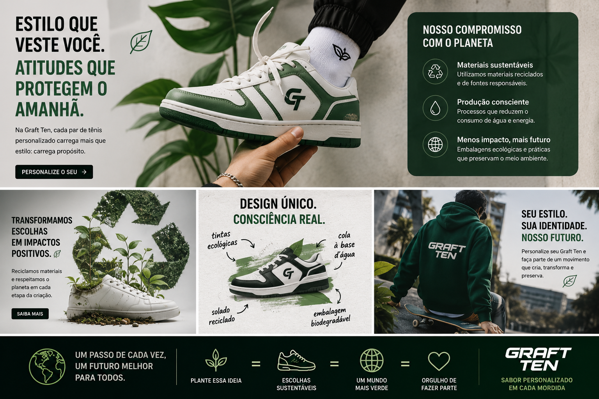
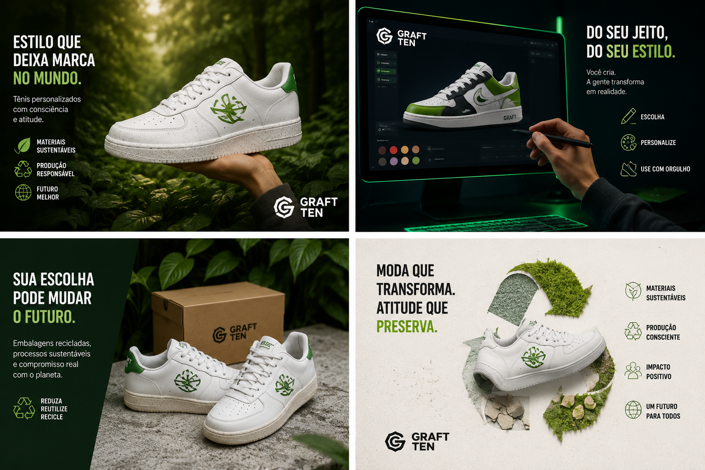
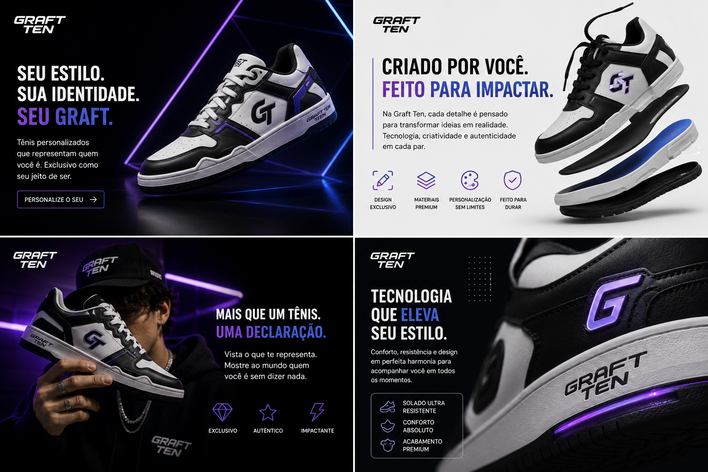

Tema 1: O Futuro nos Pés: Como a Tecnologia Transforma o Design de Tênis
Sabe aquele papo de filme de ficção científica onde as pessoas usam roupas que se moldam ao corpo e voam? Bem, ainda não estamos voando (infelizmente), mas o que a tecnologia está fazendo com os tênis hoje chega bem perto disso.
Longe de serem apenas pedaços de borracha e tecido costurados, os sneakers da Graft Ten são verdadeiros computadores de vestir — só que muito mais estilosos. Estamos falando de engenharia pura: tecidos inteligentes que respiram junto com o seu pé, amortecimentos desenvolvidos por softwares que entendem o seu impacto ao caminhar e materiais que parecem ter saído direto de 2050.
A tecnologia não serve só para deixar o visual com aquela estética cyberpunk irada; ela dita como você se move. Unir o Tech ao Design significa que você não precisa escolher entre passar o dia confortável ou ter o visual mais hypado do rolê. Dá para ter os dois. É a ciência trabalhando a favor do seu estilo.

Laboratório de Fases: Sintonize Sua Vibe
Nossos materiais alteram a frequência cromática dependendo do seu ecossistema. Teste a mudança de pele do revestimento inteligente:
Tema 3: Bastidores da Criação: Como Nasce um Tênis Personalizado
Se você acha que um tênis personalizado nasce num passe de mágica, precisamos abrir as portas do nosso laboratório. Spoiler: envolve menos poção mágica e muito mais pixels, café e paixão por design.
Tudo começa em uma tela preta cheia de linhas no software de modelagem. É ali que nossos designers começam a brincar de "Doutor Frankenstein", testando combinações de cores que ninguém nunca tentou antes, texturas que parecem impossíveis e formatos ousados. É um processo de tentativa, erro e muitos "e se a gente colocasse um detalhe neon aqui?".
Depois que o design sobrevive aos testes virtuais, ele vai para a linha de produção inteligente, onde ganha vida de verdade. Cada detalhe que você escolheu é aplicado com precisão cirúrgica. Ver um tênis saindo da caixa sabendo que ele passou por todo esse processo tecnológico só para ser único para você? É uma sensação difícil de explicar, mas muito boa de sentir.

Tema 5: Sneakers do Seu Jeito: Dicas para Escolher a Customização Perfeita
Olhar para uma página em branco dá um certo frio na barriga, né? Olhar para um tênis totalmente customizável pode causar o mesmo efeito: "E agora, o que eu faço com tantas opções?". Calma, jovem Padawan do estilo, nós temos o mapa da mina.
Para criar o Graft Ten perfeito, a regra número um é: não tente agradar todo mundo, agrade a si mesmo.
1. Paleta Base
Você é do time do visual minimalista (preto, branco, tons neutros) com apenas um ponto de cor berrante, ou quer que seu tênis seja visto lá do espaço?
2. Sintonize o Closet
Escolha cores que conversem com as roupas que você já tem. Se você usa muito jeans e camiseta preta, um tênis com detalhes vibrantes vai ser o protagonista do seu look.
3. Texturas e Microdetalhes
Brinque com os contrastes. O segredo da customização está nos pequenos detalhes que as pessoas só reparam quando olham de perto. Confie no seu instinto!

Tema 8: Galeria da Galera: Histórias de Quem Já Garantiu o Seu Graft Ten
Uma coisa é a gente falar que os nossos tênis são incríveis. Outra coisa, muito mais legal, é ver como vocês transformam a nossa tecnologia no estilo de vocês no mundo real. A nossa comunidade não usa apenas um tênis; ela dita tendência.
Nesta seção, o holofote é totalmente seu. Temos desde a galera que combina o Graft Ten com alfaiataria larga para um visual bem urbano chique, até quem não tira o sneaker do pé nem para ir à padaria, criando aquela estética destroyed cheia de história para contar.
"Cada foto que vocês nos marcam nas redes sociais mostra que a verdadeira personalização não termina quando o tênis sai da fábrica. Ela começa de verdade quando você amarra os cadarços e sai para a rua."
📸 E aí, qual vai ser a foto que você vai mandar para aparecer aqui na nossa galeria?